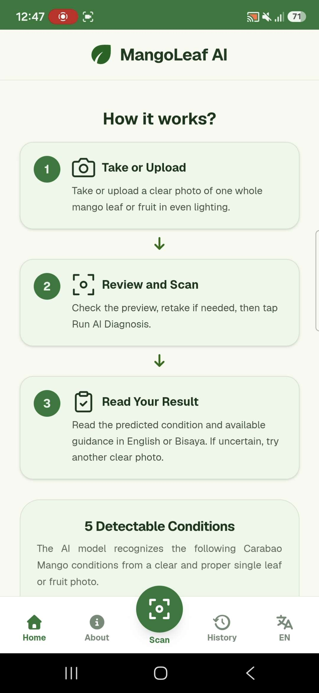
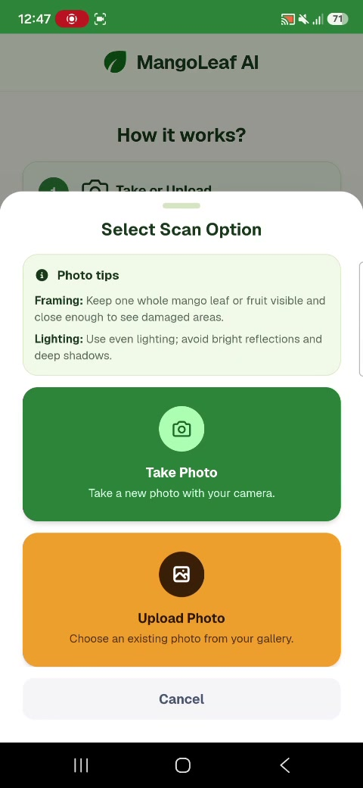
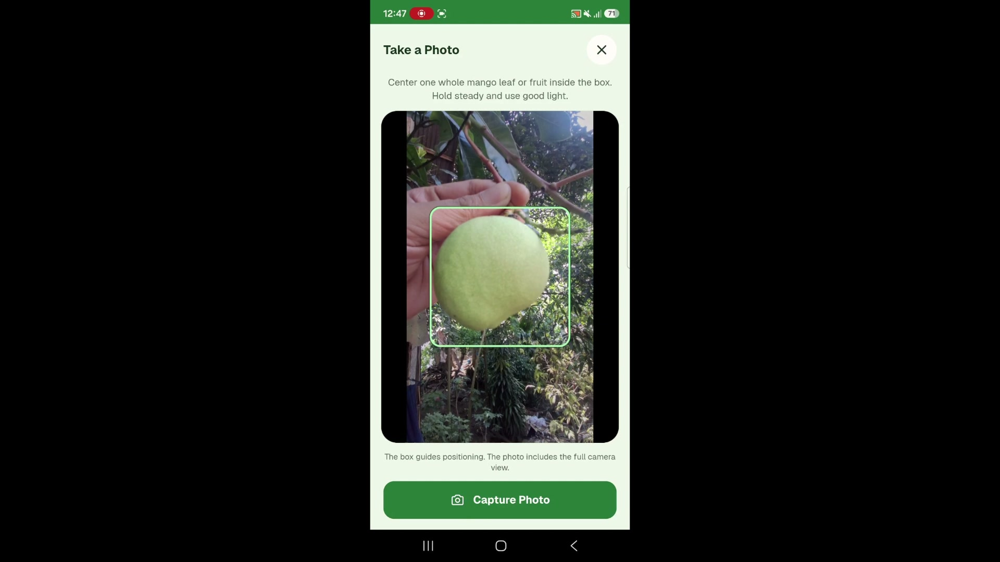
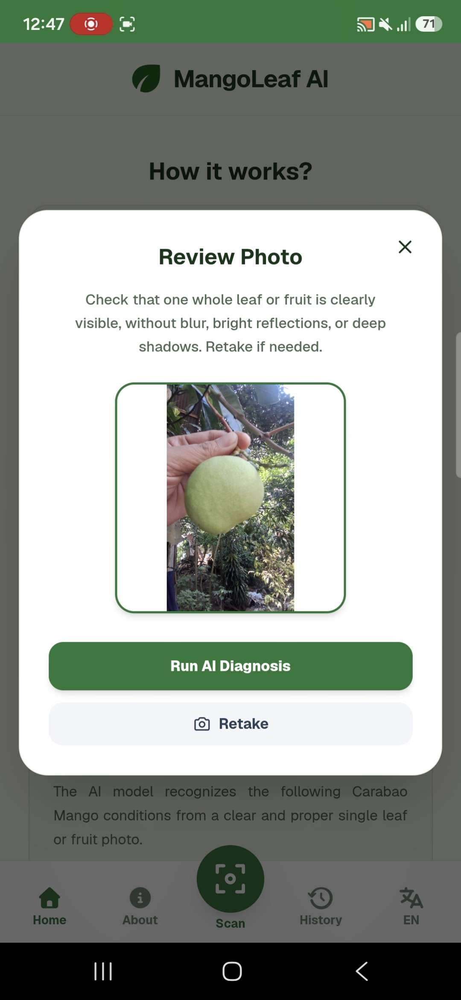
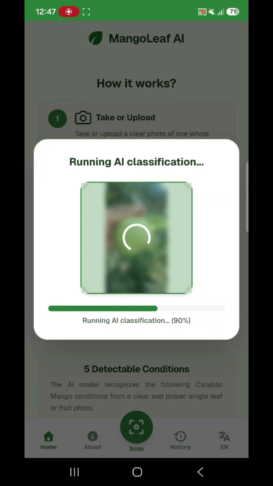
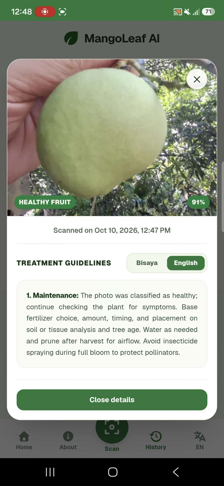
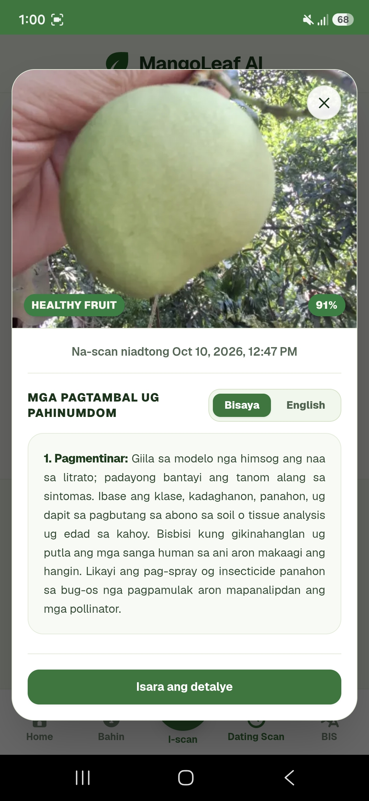
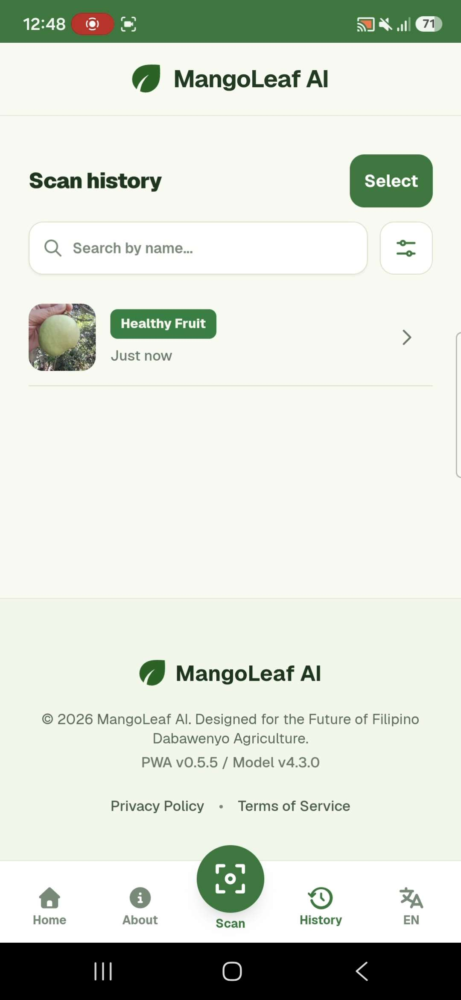

MangoLeaf AI
What is MangoLeaf AI?
Field-Ready Mango Health Diagnostic.
MangoLeaf AI is Progressive Web Application that helps Mango Farmers to Automate the Classification of the Mango Leaf and Green Fruit conditions even offline.
Support 7 classes
Leaf Diseases
Anthracnose
Sooty Mold
Bacterial Canker
Fruit Diseases
Mango Scab
Bacterial Black Spot
Healthy
Healthy Leaf
Healthy Fruit
MangoLeaf AI Offline-First Tech Stack
Simple Walkthrough
We will show one straightforward path: scan, take a photo, view the diagnosed result, open Scan History, then view the scan detail modal.
A clear view of Mango.
MangoLeaf AI checks a Mango Leaf or Mango Green Fruit right on your phone, even when you are offline.
Capture a Mango Leaf or Mango Green Fruit.
Read the Photo Tips, then use Take Photo for this simple demo. Keep one whole Mango Leaf or Mango Green Fruit in even light.
Center the subject in the Green Box Guidance.
Hold steady and use good light so the camera can capture a clear Mango Green Fruit view.
Check the photo before diagnosis.
Make sure one whole Mango Leaf or Mango Green Fruit is visible. After that, tap Run AI Diagnosis to start the on-device check.
Your photo is being checked.
Please wait a moment while the on-device model checks your photo. After that, review the result.
Understand the predicted condition.
See the predicted condition, Confidence Score, and treatment guidance in English.
Treatment Guidelines steps in Bisaya.
Switch language with One tap so Mango Farmers can understand immediate treatment steps.
Return to a saved scan.
Your Scan History keeps earlier results close at hand for a quick review.
Open the photo and its result.
Select a saved scan to view its image, diagnosis, and treatment details together.
Choose the language that helps.
English and Bisaya treatment guidance are available from the scan details.
Clear guidance, ready for the field.
MangoLeaf AI brings offline diagnosis, Scan History, and Bisaya guidance together.








MangoLeaf AI
Technology that works where the mango farmer works.